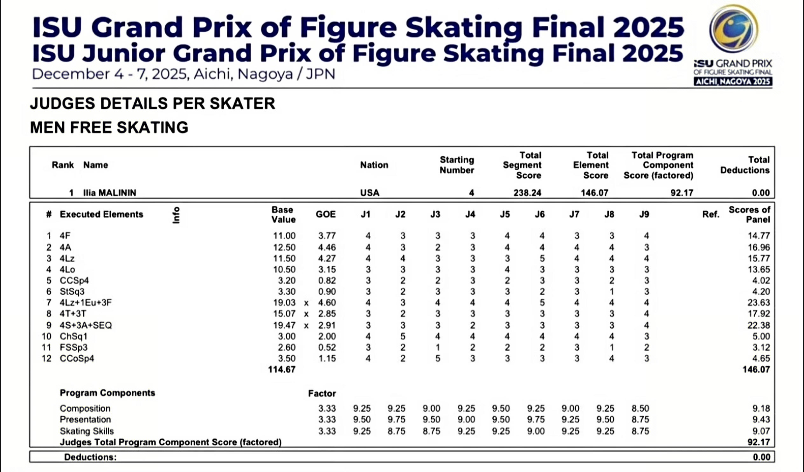
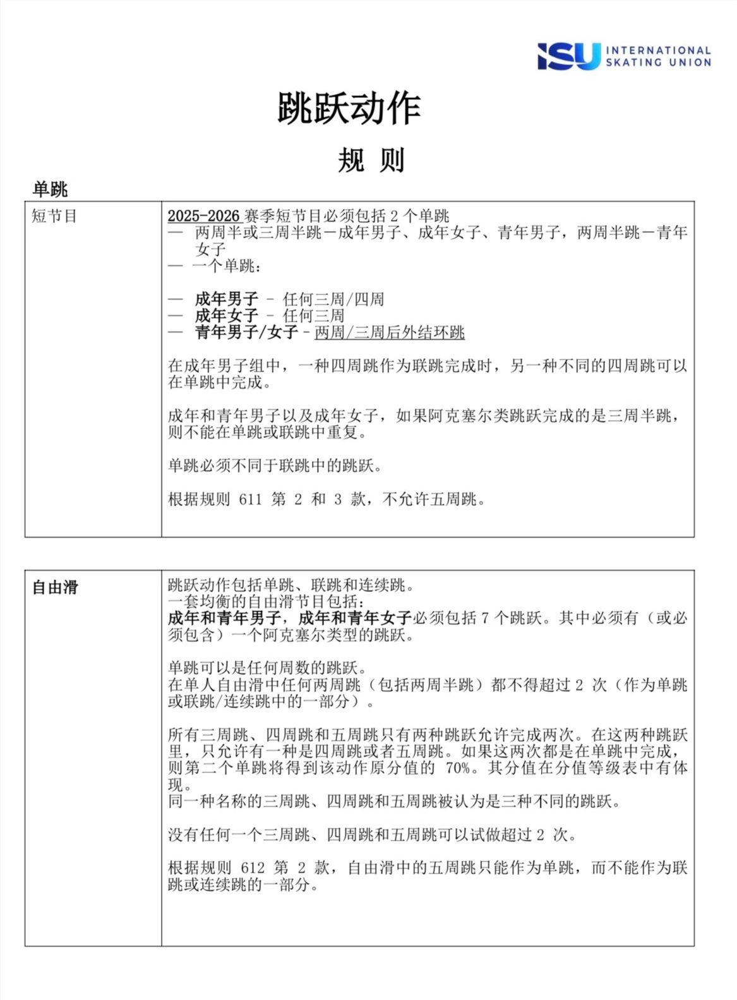

花样滑冰规则简介
概览
花样滑冰的规则体系在2002年盐湖城冬奥会裁判争议后经历了彻底改革，从传统的6.0印象分制转变为如今精细化的CoP（Code of Points）评分系统。这一系统将所有技术动作拆解为基础分值（BV）与执行质量（GOE），并结合节目内容分（PCS），旨在最大限度地保证比赛的公平与客观。要真正看懂花样滑冰，需要从竞赛形式、技术动作、评分体系以及各个项目的专属特征四个维度来切入。
竞赛构成
在正式的国际大赛（如冬奥会、世锦赛）中，花样滑冰共分为五个竞技小项：男子单人滑、女子单人滑、双人滑、冰上舞蹈以及团体赛。除团体赛外，每个小项的争夺均通过两个阶段的比赛累积得分决出名次。
单人滑与双人滑比赛分为短节目和自由滑两个赛程。短节目要求运动员在2分40秒（±10秒）内完成一套由国际滑联（ISU）指定的必做动作，自由滑男子时长4分30秒（±10秒）、女子4分（±10秒），给予选手在编排上更大的自由度，侧重耐力与艺术表达的深度。
冰上舞蹈则分为韵律舞（Rhythm Dance）和自由舞（Free Dance）。与强调跳跃和空中技巧的双人滑不同，冰舞更侧重于舞步的精准度、节奏感和配合的默契度。韵律舞通常由国际滑联在每赛季指定一种特定的社交舞节奏作为主题。团体赛则是将各队男单、女单、双人、冰舞四个项目的得分进行综合评定，是衡量一个国家花样滑冰整体实力的最高荣誉。

评分体系
现行的评分体系由两大部分构成：技术分和节目内容分。总分最高者获胜，两套节目的分数相加决定最终排名。
技术分（TES）是对节目中每一个具体技术动作的量化评分。每个动作都有一个固定的基础分值（Base Value, BV）和根据完成质量打出的执行分（Grade of Execution, GOE），范围从-5到+5。最终单个动作的（BV+GOE）的总和即为技术分。
节目内容分（PCS）是对选手艺术表现力和滑行技术的综合评价，分为三项：滑行技术考察选手的用刃深度、冰面覆盖率和滑行速度；编排考察节目的衔接难度与音乐结构设计的合理性；表演呈现则考察选手对音乐的诠释能力以及与观众的情感共鸣。这三项分数乘以相应系数后相加，即为节目内容分。

常见技术动作详解
跳跃是花样滑冰技术最大亮点之一，分为点冰跳（如后外点冰、菲利普、勾手）和刃跳（如后内结环、萨霍夫、阿克塞尔）。阿克塞尔跳是唯一向前起跳的跳跃，因其多出半周的转体，被认为是难度最高的跳跃（例如3A即三周半跳）。跳跃可以单独完成，也可以组成联合跳跃（Combination Jump），即上一个跳跃的落冰足直接作为下一个跳跃的起跳足，中间不能有步法衔接。
旋转要求选手在保持稳定轴心的同时完成高速旋转。基本姿势包括：燕式旋转（Camel Spin，身体与冰面平行）、蹲踞旋转（Sit Spin）和躬身转（Layback Spin，多见于女单）。选手可以通过换足、变刃以及变更姿态来增加旋转的难度等级，达到四级难度的旋转往往需要极佳的柔韧性和核心力量。
步法与接续步用于连接跳跃和旋转，包括直线步、圆形步和蛇形步等。步法不仅要展示复杂的转体（如括弧步、莫霍克、乔克塔）和丰富的用刃变化，还必须配合音乐的情绪起伏。